Тема: УСПАДКУВАННЯ. АБСТАКТНІ КЛАСИ. ІНТЕРФЕЙСИ
Мета : придбати практичні навички роботи створення базоаового та похідних класів, перевизначення методів у класі, методів перевантаження унарних, бінарних, логічних операторів, операторів порівняння.- Доповнити програмну реалізацію класів методами для перевантаження унарних, бінарних, логічних операторів, операторів порівняння.
- Протестувати програму. Зробити висновки.
Місце розташування проекту.
Середовище розробки : Rider

Інтерфейси
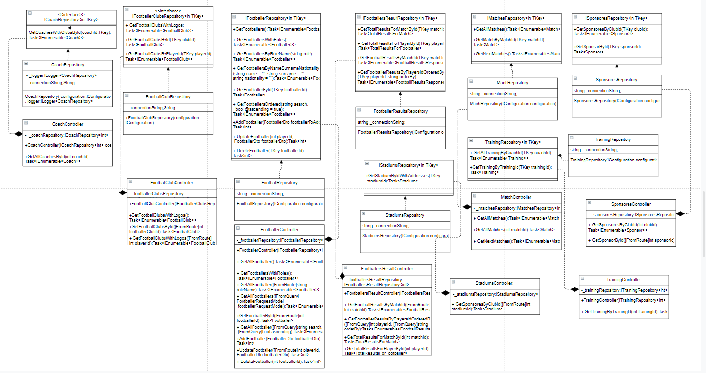Базовий абстрактний клас
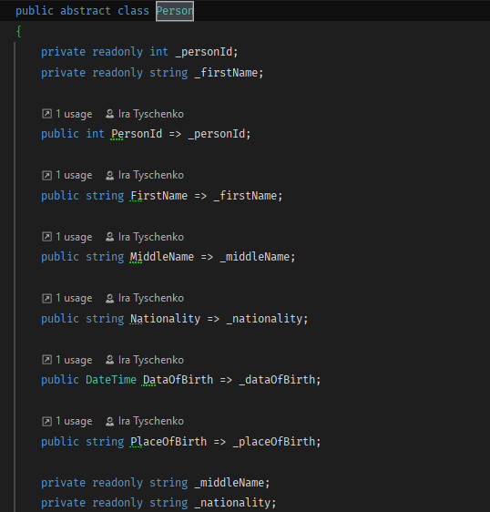Похідний клас спонсор
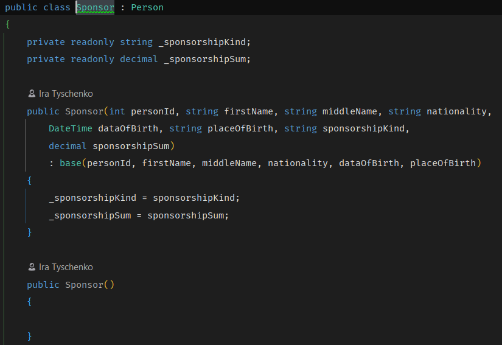Похідний клас тренер
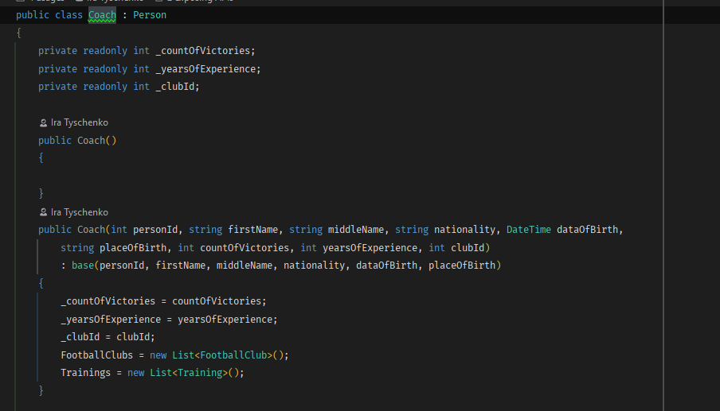Похідний клас футболіст
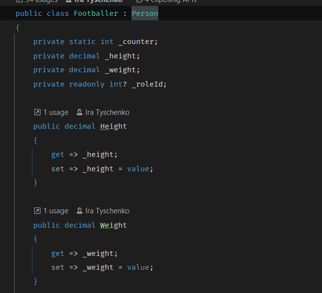Вивід програми
Футболісти
Футболісти downcosted
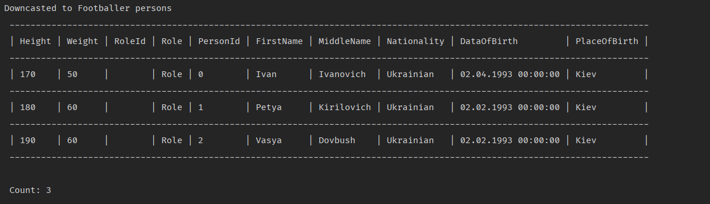Футболісти upcasted
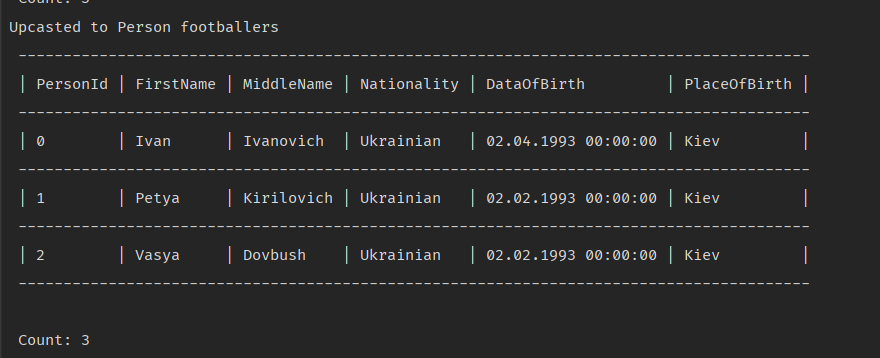Інтерфейс футбольного клубу
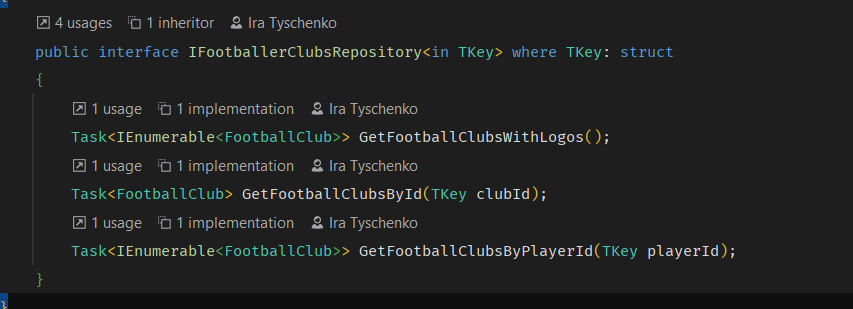Реалізація футбольного клубу
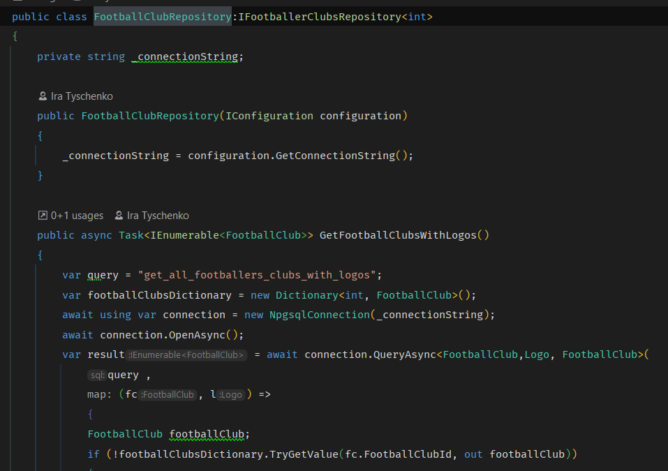Інтерфейс для доступу до тренера
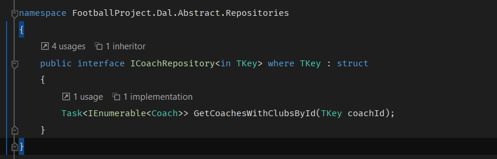Реалізація для доступу до тренера
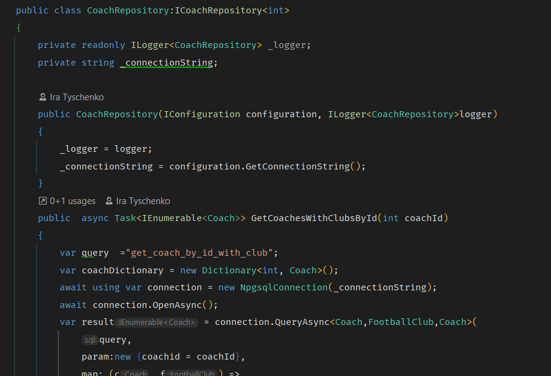

Висновок: в ході виконання даної лаборатоної роботи я придбала практичні навички роботи створення абстарктних ласів, створення інтерфесів і їх реалізації.
Таким чином ,абстрактний метод визначає сигнатуру для методу, але не забезпечує його реалізації. У похідному класі кожний абстрактний метод, визначений базовим класом, реалізується по-своєму. Таким чином, абстрактний метод задає інтерфейс для методу, але не спосіб його реалізації.
Інтерфейси синтаксично подібні абстрактних класів. Проте в інтерфейсі ні один метод не може включати тіло, тобто інтерфейс в принципі не передбачає якої б то не було реалізації. Він визначає, що повинно бути зроблено, але не уточнює, як. Коль скоро інтерфейс визначено, його може реалізувати будь-яку кількість класів. При цьому один клас може реалізувати будь-яке число інтерфейсів.